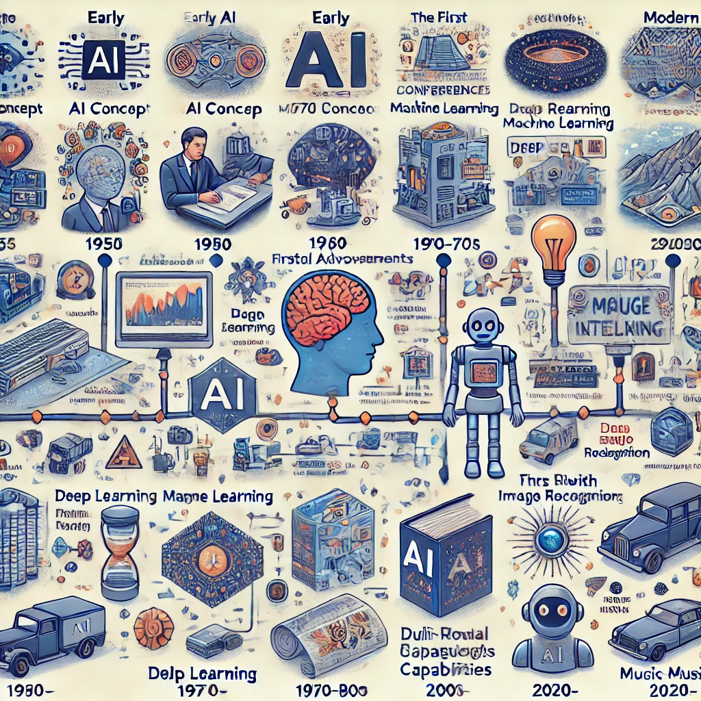
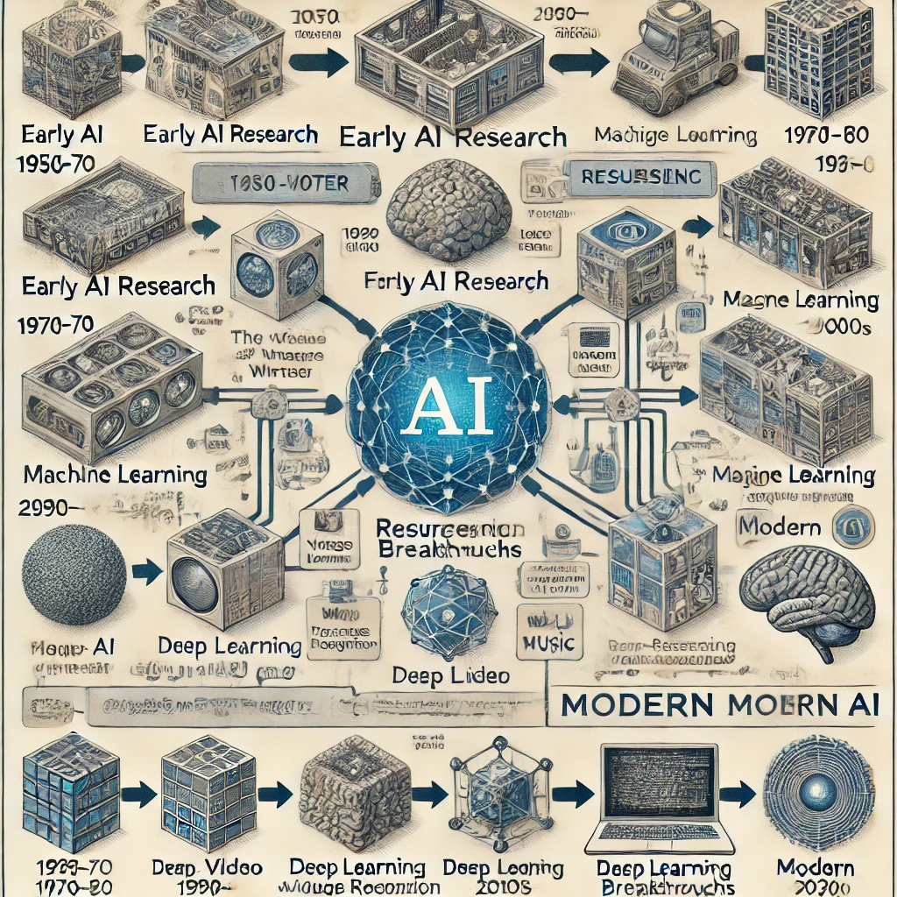

인공지능(AI)은 사람의 지능처럼 생각하고 학습하며 문제를 해결할 수 있는 컴퓨터 프로그램이나 시스템을 말한다. 쉽게 말해, 인공지능은 사람처럼 생각하는 '똑똑한 기계'라고 할 수 있다.
인공지능은 크게 두 가지로 나눌 수 있다:
약한 인공지능(좁은 인공지능): 특정한 작업만 잘 수행하는 인공지능이다. 예를 들어, 스마트폰의 음성 인식 기능이나 검색 엔진 등이 여기에 해당한다. 주어진 한 가지 일을 잘하지만, 다른 일을 할 수는 없다.
강한 인공지능(일반 인공지능): 사람처럼 여러 분야에서 자유롭게 사고하고 문제를 해결할 수 있는 인공지능이다. 아직 개발되진 않았지만, SF 영화에 자주 등장하는 인공지능이 바로 이 유형이다.
인공지능은 컴퓨터가 수많은 데이터를 분석하고, 그 안에서 패턴을 찾아내어 '학습'함으로써 발전해. 이 과정이 반복되면서 점점 더 똑똑해지고, 우리가 직접 알려주지 않아도 스스로 개선할 수 있는 능력을 갖추게 된다.
요즘엔 인공지능이 여러 산업에서 널리 사용되고 있다. 예를 들어, 의료 분야에서는 질병을 진단하는 데 사용되고, 금융 분야에서는 투자의 위험을 분석하기도 한다.

(DALL·E가 그린 인공지능의 역사)
인공지능의 역사
1. 초기 개념과 아이디어(1950년대 이전)
인공지능이라는 개념 자체는 1950년대에 나오기 시작했지만, 그 이전에도 기계가 사람처럼 생각하고 학습할 수 있을지에 대한 연구와 철학적 고찰이 있었다.
2. 인공지능의 탄생(1956년)
1956년 다트머스 회의에서 존 매카시가 "인공지능"이라는 용어를 처음 사용하며 학문 분야로서의 인공지능이 탄생하게 된 것이다. 이 회의에서는 기계가 인간처럼 학습하고 문제를 해결할 수 있을 가능성에 대해 논의되었다.
3. 초기 연구와 발전(1950~1970년대)
1950~1970년대에는 인공지능 연구가 활발히 진행되며 간단한 논리와 규칙에 기반한 프로그램들이 개발되었다. 그러나 기술의 한계로 인해 당시 인공지능은 복잡한 문제를 해결하는 데 어려움이 있었다.
4. 첫 번째 AI 겨울(1970~1980년대)
1970년대 후반부터 1980년대 중반까지는 연구 자금이 줄어들고 인공지능에 대한 관심이 감소하면서 'AI 겨울'이라고 불리는 침체기가 찾아온 것이다. 기대에 미치지 못한 성과로 인해 많은 연구가 중단되었다.
5. 기계 학습과 데이터 기반 발전(1990년대~2000년대)
1990년대에 들어서면서 기계 학습과 통계적 방법론이 발전하며 인공지능이 다시 주목받기 시작한 것이다. 특히, 인터넷의 보급으로 인해 데이터의 양이 급격히 증가하면서 기계 학습을 활용한 인공지능 모델이 효과를 보기 시작했다.
6. 딥러닝과 AI의 부활(2010년대 이후)
2010년대에 들어 딥러닝 기술이 큰 발전을 이루며 인공지능은 비약적으로 성장하게 된 것이다. 딥러닝은 많은 데이터를 학습하여 고도의 예측 능력을 갖추게 해주며, 음성 인식, 이미지 인식, 자율 주행 등 여러 분야에서 성과를 내기 시작했다.
7. 현대의 인공지능(2020년대~현재)
오늘날 인공지능은 챗봇, 자율주행, 의료 진단 등 다양한 분야에서 실생활에 적용되고 있는 것이다. 특히 생성형 인공지능 기술의 발달로 텍스트 생성, 이미지 생성, 음악 생성 등 새로운 창작 방식에도 활용되고 있다.

(DALL·E가 그린 인공지능 발달과정에 대한 아키텍쳐)
다양한 방향에서의 인공지능의 발달 과정
1. 이미지 생성과 분석 (2012년 이후)
2012년, 딥러닝 기술이 급격히 발전하면서 이미지 인식 기술이 비약적으로 개선되기 시작했다. 특히 **알렉스넷(AlexNet)**이란 모델이 이미지 인식 대회에서 큰 성과를 내며, 이후 여러 딥러닝 모델들이 개발되었다.
2014년에는 **GAN(생성적 적대 신경망)**이 개발되면서 인공지능이 실제 같은 이미지를 생성하는 데 성공했다. GAN 기술을 통해 사람 얼굴, 풍경, 예술 작품 등을 생성하는 AI가 나오기 시작했다.
2. 동영상 생성과 분석 (2016년 이후)
동영상에서는 이미지와 시간적 흐름을 함께 분석해야 해서 난이도가 높지만, 2016년 이후부터 딥러닝 기반으로 동영상 속 사람의 동작을 분석하거나 특정 효과를 적용하는 AI 기술이 발전했다.
특히 Deepfake 기술이 등장하면서 AI가 기존 동영상을 기반으로 특정 인물의 얼굴을 다른 사람의 얼굴로 교체하거나 가짜 영상을 생성하는 기술이 큰 주목을 받았다. 이 시기를 기점으로 동영상 생성 기술이 빠르게 확장되었다.
3. 음악 생성과 작곡 (2018년 이후)
AI가 음악을 생성하기 시작한 것은 2018년 이후로, OpenAI의 MuseNet과 Google의 Magenta 프로젝트가 큰 영향을 미쳤다. MuseNet은 다양한 음악 장르와 악기를 조합해 새로운 곡을 만드는 AI였고, Magenta는 딥러닝을 통해 음악뿐 아니라 예술 작품까지 창작할 수 있도록 한 프로젝트였다.
이후 AI는 특정 음악 스타일을 모방해 작곡하거나, 실제 음악 작곡에 도움을 주는 도구로 발전했다.
4. 멀티모달 AI와 생성형 AI (2020년대 이후)
2020년대에는 이미지, 텍스트, 동영상, 음악을 모두 다룰 수 있는 멀티모달 AI가 개발되었다. GPT-3 이후에는 텍스트와 이미지를 결합한 DALL·E 모델이 나왔고, 이를 통해 AI가 텍스트 설명을 바탕으로 이미지를 생성하는 새로운 방식이 가능해졌다.
또한 2022년에는 Stable Diffusion과 Midjourney 같은 AI 모델들이 공개되면서 누구나 쉽게 고품질의 이미지를 생성할 수 있는 시대가 열렸고, 동영상 생성도 연구가 활발히 진행 중이다.